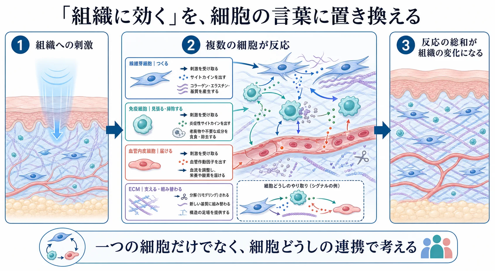
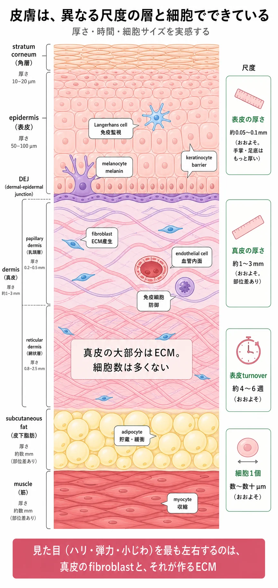
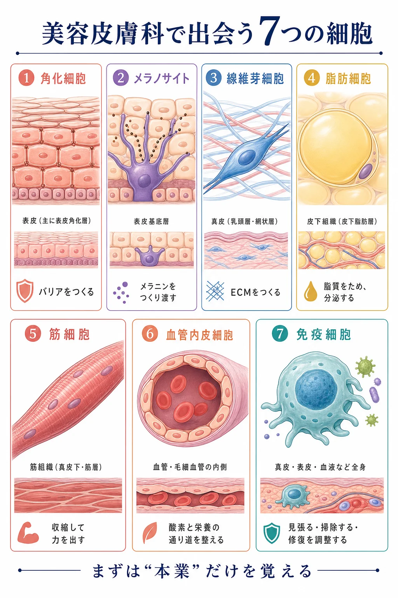
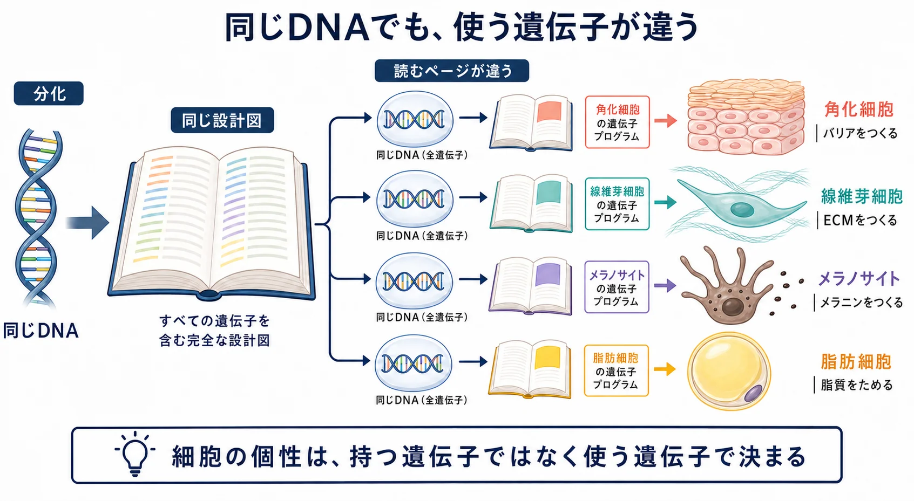
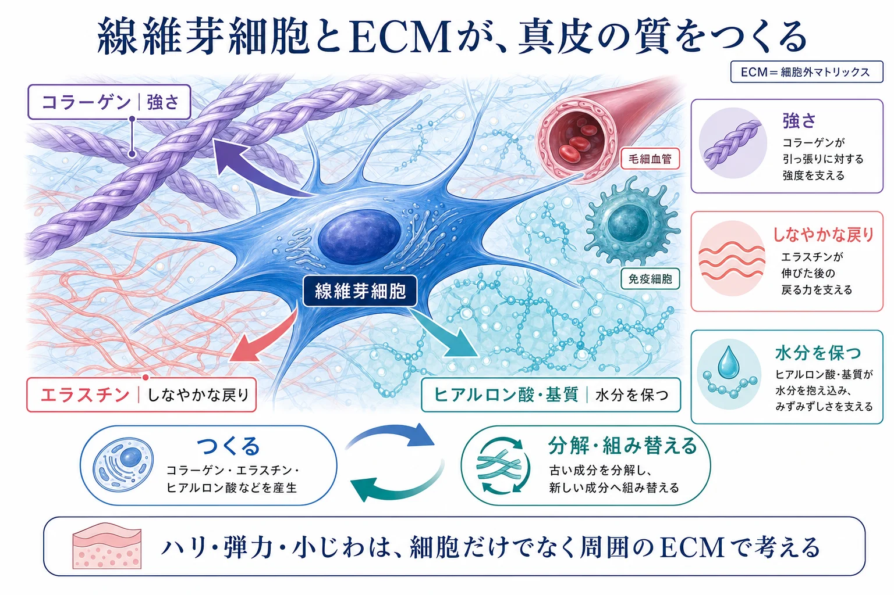
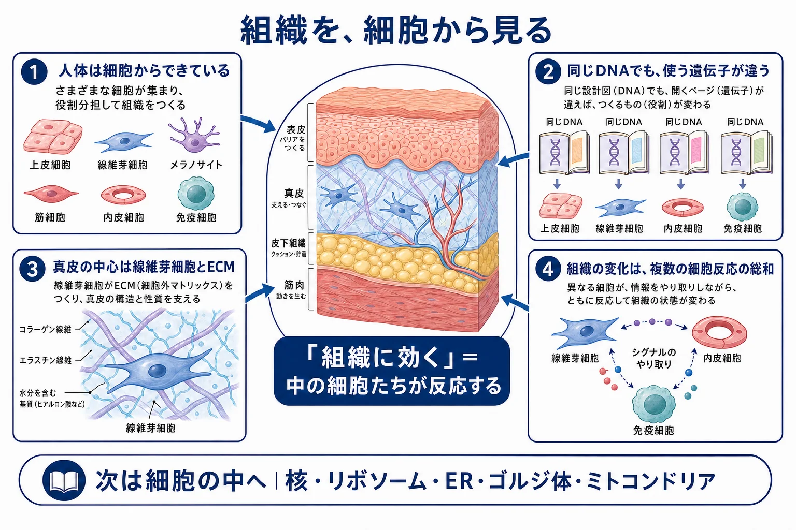

基礎 ／ 細胞の地図
細胞とは何か
公開 2026-08-14
私たち美容皮膚科医は「コラーゲンを増やします」「表皮を入れ替えます」と説明して治療をしていますが、実際の反応は細胞レベルで起きています。見えている効果は、細胞の反応の結果です。では、日々行う治療はどの細胞に作用して、どんな反応を起こしているのか。この章ではまず、細胞の基本を復習します。美容治療がどう細胞に影響するかは、美容皮膚科の各章で扱います。
この章の一言
「肌」は、何種類もの細胞と、その細胞が作る ECM（細胞外マトリックス）でできています。「たるみ」「ハリ」は、その状態を指す言葉です。
ECM を作るのも細胞、それを分解する MMP を出すのも細胞です。だから「組織に効く」ということは、「その細胞たちが反応する」ということです。
1 なぜ細胞の単位で見るのか
機器や注射が届くのは組織ですが、反応するのはその中の細胞です。組織の変化は、細胞の反応の総和として出てきます。しかも動く細胞は一種類ではありません。

細胞の単位で見ると、考えることが変わります。「この機器は効くか」ではなく、「この機器はどの細胞に作用して、どんな反応を起こし、効果を出しているのか」。この章では、この見方で進めます。
2 では、どんな細胞がいるのか
細胞は層ごとに分かれて存在し、その局在がそのまま機能の分担になっています。

主な役割と、押さえどころ（この先の章で使う性質）を1行ずつ挙げます。どの細胞がどの施術に関わるかは、美容皮膚科の各章で扱います。
| 細胞 | 主な役割 | 押さえどころ |
|---|---|---|
| keratinocyte（角化細胞） | 表皮を作りバリアになる | 表皮の9割以上。基底層で分裂し、扁平化・脱核して角層を構成する。バリアはこの細胞の最終産物。UVやストレスを受けてサイトカインを出す発信源でもある |
| melanocyte（メラノサイト） | メラニンを作り角化細胞へ渡す | 基底層に点在し、樹状の突起で周囲の数十個へ渡す。色の濃さは細胞数の差ではなく、作る量と渡し方・分布の差（→ メラノサイトと色素形成） |
| fibroblast（線維芽細胞） | ECMを作る真皮の主役 | 自分で作ったECMを、自分が出す MMP（matrix metalloproteinase）で分解もする。真皮の質は、この細胞が合成と分解のどちらに傾いているかの結果（→ 線維芽細胞とコラーゲン） |
| adipocyte（脂肪細胞） | 脂質をエネルギーとして貯蔵する | 貯蔵だけでなく、leptin・adiponectin などを分泌する内分泌器官でもある（→ 脂肪） |
| myocyte（筋細胞） | 収縮して力を出す | 多核でエネルギー消費が大きい。表情筋の張力は、上に乗っている皮膚の形にそのまま出る（→ 筋肉） |
| endothelial cell（血管内皮細胞） | 血管の内腔を単層で覆い、血液と組織のあいだを仕切る | 血管を広げる（血管径）・漏らす（透過性）・増やす（血管新生）の三つを担う。赤みも治癒も、まずこの細胞から考える（→ 血管と内皮） |
| immune cell（免疫細胞） | 監視・貪食・炎症の調整 | 表皮の Langerhans cell、真皮のマクロファージ・T細胞・肥満細胞。貪食だけでなく、修復の時間経過を決めているのもこの細胞（→ 炎症と創傷治癒） |

3 細胞の大きさと時間軸
反応する細胞の大きさや時間軸を知らないと、「どこまで届いたか」も「いつ返ってくるか」も判断できません。針を何 mm 刺すか。この波長は真皮のどこで吸収されるか。この外用は角層を越えるのか。いずれも µm と mm の話です。
以下は目安です。部位差・個人差・加齢差が大きく、顔と手のひら、目のまわりと背中では違います。
| 対象 | おおよその大きさ |
|---|---|
| ヒトの体細胞（一般） | 直径 10〜30 µm |
| 基底層の keratinocyte | 直径 約10 µm |
| 角層の細胞（扁平化後） | 幅 30〜40 µm・厚さ 1 µm 前後 |
| fibroblast | 細長い紡錘形で長径 数十 µm |
| 成熟 adipocyte | 直径 50〜100 µm（ためた脂質量で変わる） |
| 骨格筋線維（myocyte） | 直径 10〜100 µm・長さは数 cm |
| 層 | おおよその厚さ |
|---|---|
| 角層（stratum corneum） | 10〜20 µm（手のひら・足の裏は例外的に厚い） |
| 表皮（epidermis）全体 | 0.05〜0.1 mm（手のひら・足の裏は例外的に厚い） |
| 真皮（dermis） | 顔で 1〜2 mm、背中など厚いところは 3 mm 超 |
| 基底膜（dermal–epidermal junction, DEJ） | 50〜100 nm |
時間軸も層ごとに違います。基底層で生まれた keratinocyte が角層まで上がるのに約2週間、剥がれ落ちるまでさらに2週間。表皮のターンオーバーは約1か月です（加齢で延びるとされます）。真皮の collagen は年単位です。だから効果が現れる時期も、狙った層で変わります。
密度も違います。表皮は細胞が密に詰まった層ですが、真皮は体積のほとんどが ECM で、collagen が乾燥重量の7〜8割を占めるとされます。fibroblast は線維の間に疎らに分布します。真皮は細胞が主体の組織ではなく、体積の大半を ECM が占め、その中に fibroblast が点在している組織です。だから真皮への治療は、少数の細胞に広い ECM を作り替えさせることになります。
基底膜（DEJ）も押さえておきます。 厚さ 50〜100 nm、主成分は type IV collagen と laminin で、type VII collagen の anchoring fibril が真皮側へ伸びて固定しています。
表皮には血管がありません。 酸素も栄養も、真皮の血管から DEJ を越えて拡散で届きます。DEJ は接着面であり、物質と情報の通過点でもあります。肝斑でこの構造が壊れる話は → メラノサイトと色素形成。
4 同じDNAでも、使う遺伝子が違う
体の細胞はほぼ全部が同じDNAを持っています。それでも keratinocyte と fibroblast と adipocyte の働きがまるで違うのは、読んでいるページが細胞ごとに違うからです。これが分化です（読み方の制御は → 「情報をどう読むか」）。

細胞ごとの性質は、持っている遺伝子ではなく使っている遺伝子で決まります。だから治療で狙えるのは、細胞を入れ替えることではなく、発現パターンを変えることです。
5 見た目を左右するのは fibroblast と、それが作る ECM
7つの細胞のうち、ハリ・弾力・小じわをいちばん左右するのは fibroblast と、それが作る ECM です。ここが本教材の中心になります。理由は4つあり、どれも §3 で見た大きさと時間軸から出てきます。
- 体積で圧倒的。 皮膚の厚みの約9割は真皮で、その真皮はほぼ ECM です。厚み・ハリ・落ち込みという立体の変化は、ECM の量と質でほとんど決まります。表皮は 0.1 mm 前後なので、そこだけでは輪郭は変わりません。
- 機械的な性質を担う。 引っ張りに耐えるのは collagen、伸びて戻るのは elastin、水を抱えて張りを出すのは hyaluronan などの糖鎖。いずれも fibroblast の産物です（→ 線維芽細胞とコラーゲン・弾性線維と膠原線維）。
- 光の通り方に効く。 collagen 線維の密度・太さ・向きが、入ってきた光の散乱を変えます。透明感やきめの見え方に関わります（色そのものはメラニンとヘモグロビンによります）。
- 入れ替わりが遅い。 表皮は約1か月で入れ替わるのに、真皮の collagen は年単位です。表皮の変化は戻りやすく、真皮の変化は蓄積します。 そのため真皮では、加齢や紫外線の影響が残りやすいです。

この章の到達点
- 「組織に効く」とは、その細胞たちが反応するということ。 考えるのは「この機器はどの細胞に作用して、どんな反応を起こし、効果を出しているのか」。
- 組織の変化は複数の細胞の反応の総和。単一の細胞や分子では説明しない。
- 大きさと時間の目安をつかむ。細胞は 10〜30 µm、表皮は 0.1 mm 前後、真皮は 1〜3 mm、基底膜は 50〜100 nm。表皮のターンオーバーは約1か月、真皮の collagen は年単位。
- 同じDNAでも使う遺伝子が違うから、細胞ごとに性質が違う。治療で狙えるのは発現パターンを変えること。
- 見た目をいちばん左右するのが fibroblast と ECM なのは、体積・機械的性質・光の散乱・入れ替わりの遅さの4つが理由。
この章のまとめ

オルガネラでは細胞の中に入り、オルガネラ（核・リボソーム・ER・Golgi・ミトコンドリアなど）を思い出します。「コラーゲンを作る」というひとつの仕事が、どのオルガネラの連携で成り立っているのかを見ていきます。